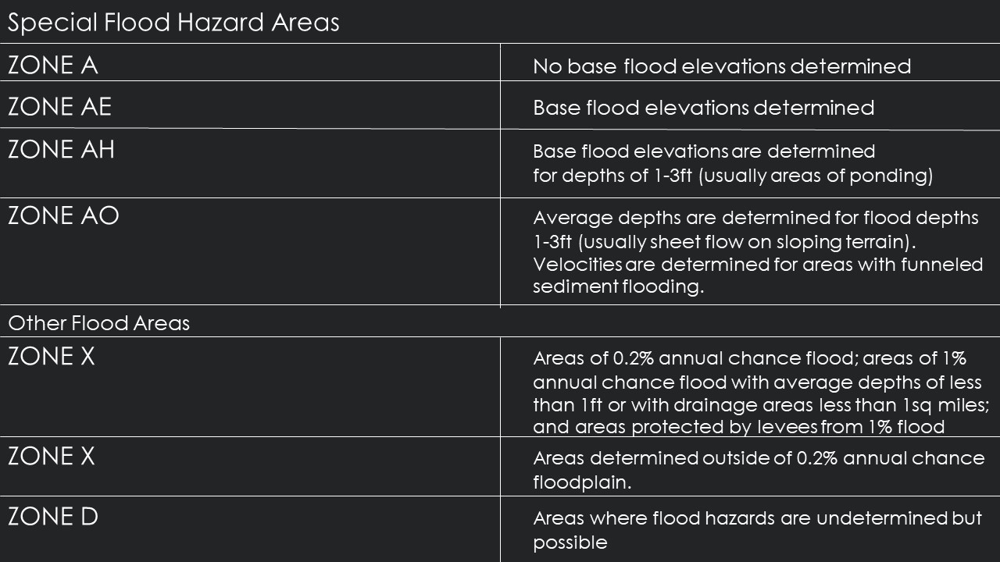

Los Angeles City Flood Map
Figure 1.0: This map displays the extent of Los Angeles City versus Los Angeles county to display the spatial boundaries that will be discussed below.
"Floods affect more people worldwide than any other natural hazard. Flood risk results from the interplay of a range of processes. For river floods, these are the flood-triggering processes in the atmosphere, runoff generation in the catchment, flood waves traveling through the river network, possibly flood defense failure, and finally, inundation and damage processes in the flooded areas. In addition, ripple effects, such as regional or even global supply chain disruptions, may occur. Effective and efficient flood risk management requires understanding and quantifying the flood risk and its possible future developments. Hence, risk analysis is a key element of flood risk management. Risk assessments can be structured according to three questions: What can go wrong? How likely is it that it will happen? If it goes wrong, what are the consequences? Before answering these questions, the system boundaries, the processes to be included, and the detail of the analysis need to be carefully selected."
Oxford University
FEMA Flood Zones by Category
Figure 1.1: This map displays the spatial distribution of FEMA flood zones based on category. The graphic below shows a breakdown of the several categories listed in this visualization.

The Flood Risk in Los Angeles
Floods in Los Angeles are most common due to overflow of drainage basins or excessive rainfall. However, the risk of a flood causing damage to properties are low, and the risk of flood causing harm or injury to persons is even lower. Floods were more common in Los Angeles in the late 19th century into the early 20th century because of faulty infrastructure, however over the last 50 years major improvements have been made such as overflow basins, paved rivers and canals, and other means of catching and moving water through a system to prevent flooding. Vulnerabilities in the city for flooding are damage to foundation in housing but no real threat to the population. Los Angeles biggest threat fir natural disasters are earthquakes, as flooding has been management through man-made structures.
The city of Los Angeles has a flood control district that was created in 1915 after a disastrous flood destroyed property’s and claimed lives of residents. The Los Angeles Flood Control Act (ACT) was adopted by the State of California and is governed as a separate entity, by the County of Los Angeles Board of Supervisors (https://dpw.lacounty.gov/LACFCD/web/). The County of LA has divided the work among City Planners, Watershed Management Division, Public Works Flood Maintenance and Water Source Divisions, and a few other departments to maintain the prevention of floods. Drainage infrastructure, dams and reservoirs, open channel, underground storm drains, pump plants, debris basins, sediment placement sites, seawater intrusion barriers and catch basins are all maintained by the county to ensure floods are minimal.
Historically, flooding has occurred in Lancaster, Malibou Lake, Quartz Hill, Rowland Heights, and the San
Gabriel and Santa Monica mountains. Properties in these areas are near steep hillsides where rainwater runs
off quickly flooding areas along the hillside. Other properties are near a stream or lake where rainwater tends
to run off quickly resulting in fl ooding of the adjacent areas.
Area of Flood Hazards by %
Figure 1.2: This map displays the spatial distribution of flood hazard by percent. It displays the 100 year, and 500 year flood plain also the areas with minimal flood hazard which represents most of Los Angeles, and flood ways. Flood ways are not as visible however they exist along the coast lines of LA. Non-Hazardous areas are areas that are both undetermined and show the lowest potential risk of flood.
Critical Facilities included in Flood Analysis
The city I chose to do a flood analysis on was Los Angeles. I knew they would have great data, and throughout history has been a city, or region subject to flood. The three critical facilities I chose to include in my maps were Hospitals with Emergency Rooms, Emergency Disaster Offices, and also Primary Disaster Routes. In case of disaster, finding a health facility that can immediately attend to injury would be most suitable in an emergency situation. In case of evacuation, primary disaster routes would be helpful to vacate the city. And in the event of a flood, whether light or heavy, resources offered at emergency disaster offices will be most helpful to answering questions and providing services as they are equipped to do in these specific situations. These are the three types of facilities I would use in case of a disaster or emergency in relation to flooding. All the data for these facilities were available and accessible via Los Angeles Open Source GIS Data official website: http://geohub.lacity.org.
Primary Disaster Routes and Emergency Locations
Figure 1.3: This map displays the spatial distribution of population density calculated with Census Data for the city of LA. The heart icons represent hospitals that are open and available during the event of a disaster, and the marker icons represent Emergency Disaster Offices that one can go to for resourceful information. Primary disaster routes are visible as red lines for emergency personnal and major highways. Airports are also visible, LAX and LGB in case they are open for flights to leave to a safe area.
Housing Unit Density and Major Pathways
Figure 1.4: This map displays the spatial distribution of housing units and major pathways. The pathways are represented in an orange color to represent and extention of primary disaster routes and where to go after leaving the city. Airports are also visible, LAX and LGB in case they are open for flights to leave to a safe area.
Suggestions for Flood Prevention
If worried about flood prevention in Los Angeles, I would suggest speaking to your local municipality about rain gardens, bio-retention planters, or permeable pavement facilities/surfaces. The majority of flooding comes from rainfall in Los Angeles City since the County has developed such a comprehensive plan of Flood Prevention. Finding a way to gather rainwater would be the most helpful to reducing the risk of flood in your area. Also, if you live in a neighborhood where you notice water build up after rainfall, it would be wise to contact your local municipality to alert them of excess water in streets and near homes to ensure that catch basins and other drainage features are working properly to collect and move the water.
Flood Insurance For Protection
Los Angeles County has been a NFIP participant since December 1980, making flood insurance
available to all County unincorporated area residents. You can purchase a flood insurance policy
from most insurance agencies. More than 25 percent of flood insurance claims occur outside of Special Flood Hazard Areas. Homeowner’s insurance rarely covers flood damage. In most cases, property owners must purchase flood insurance to protect against damage caused by flooding. Renters may also purchase flood insurace. The cost of your flood insurance policy will depend on factors that include, but are not limited to the type of property, level of flood risk, and amount of coverage selected. Coverage can also be purchased for the contents of the building. Elevation certificates may provide a discount on your flood insurance policy. Visit: for more information on elevation certificates.
What should you do before a flood?
• Purchase flood insurance (note there is a 30-day waiting period before,
coverage goes into eff ect).
• Understand and be aware of your property’s flood risk.
• Research flood mitigation information.
• Prepare a family emergency response plan.
• Prepare your home for floods.
• Make disaster kits.
• Register your cell phone number and/or e-mail with Alert LA County at
alert.lacounty.gov for automated notifi cation in emergencies.
• Request Public Works mud flow advice by calling (626) 458-6164 if your home
is located within a recently burned watershed.
What should you do after a flood?
• Call utility companies to restore service.
• Dispose of flood contaminated supplies.
• Boil tap water until local officials indicate it is safe to drink.
• Avoid disaster areas.
• Stay away from electrical equipment in wet areas.
• Avoid driving if possible.
• Do not use open flame devices.
• Obtain permit for property damage repairs.
• Hire licensed and insured contractors.
• Report any suspected permit violations.
Information about Los Angeles Flood Control District: LAFCD